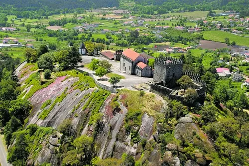
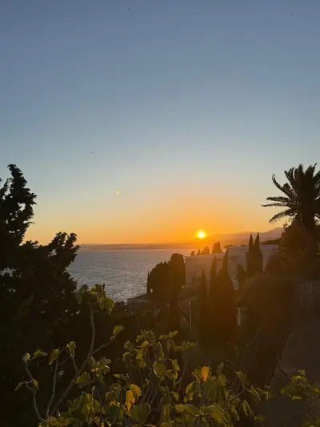
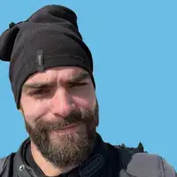

A MotoXpeditions nasceu da vontade de transformar simples viagens de moto em experiências verdadeiramente memoráveis. O projeto começou com um pequeno grupo de amigos apaixonados por aventura, que explorava as estradas mais emblemáticas de Portugal e Espanha. Com o tempo, as rotas tornaram-se mais ambiciosas, o grupo cresceu e a paixão evoluiu para algo maior. Hoje, a MotoXpeditions dedica-se a criar expedições organizadas, seguras e cheias de espírito de descoberta, mantendo sempre a essência que lhe deu origem: a liberdade de viajar em duas rodas.

Castelo da Póvoa de Lanhoso
Missão
A nossa missão é proporcionar expedições de moto que combinem segurança, emoção e autenticidade. Queremos que cada participante viva a estrada de forma intensa, descubra novos destinos e sinta o verdadeiro espírito de aventura. Trabalhamos para garantir rotas bem planeadas, apoio constante e um ambiente de companheirismo que transforma cada viagem numa experiência única.

Pôr do sol na costa de Nice, França
Visão e Valores
A MotoXpeditions ambiciona ser uma referência nacional em viagens de moto, reconhecida pela qualidade das suas rotas e pela dedicação à segurança e ao bem-estar dos participantes. Acreditamos que a aventura deve ser vivida com responsabilidade, respeito pela natureza e espírito de equipa. Os nossos valores refletem essa visão: liberdade, segurança, sustentabilidade e união entre motociclistas. Cada expedição é pensada para honrar estes princípios e criar memórias que ficam para a vida.
Equipa
A equipa da MotoXpeditions é composta por pessoas que vivem a estrada com a mesma paixão que partilham com cada participante. Cada membro traz experiência, dedicação e um profundo conhecimento das rotas que percorremos. Juntos, garantimos que cada expedição é segura, bem organizada e cheia de momentos inesquecíveis.

Miguel Silva — Fundador e Guia de Expedições
O Miguel é um dos pilares da MotoXpeditions. Apaixonado por motos e por descobrir novos caminhos, é conhecido pela sua calma, responsabilidade e capacidade de liderar qualquer grupo com segurança. Tem um profundo conhecimento das estradas nacionais e das rotas mais emblemáticas da Península Ibérica. Para o Miguel, cada expedição é mais do que uma viagem: é uma oportunidade de criar memórias e partilhar a verdadeira essência da aventura em duas rodas.
Luís — Co-fundador e Navegador de Rotas
O Luís é o estratega das rotas e o companheiro ideal para qualquer expedição. Com um olhar atento para detalhes e uma enorme experiência em navegação, é ele quem garante que cada percurso é equilibrado, seguro e cheio de paisagens marcantes. A sua paixão por explorar novos destinos e o seu espírito de equipa fazem dele uma peça fundamental na organização e no sucesso de cada viagem da MotoXpeditions.
Bruno — Co-fundador e Apoio Técnico
O Bruno é o responsável por assegurar que tudo corre bem antes, durante e depois de cada expedição. Com conhecimentos sólidos de mecânica e uma grande dedicação ao grupo, é ele quem garante que as motos estão sempre prontas para enfrentar qualquer desafio. O seu profissionalismo, aliado ao gosto pela aventura, torna-o indispensável no apoio técnico e na segurança das viagens da MotoXpeditions.